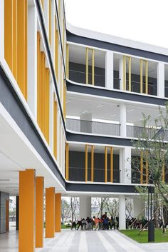

École CNTCC
Apprendre la Danse, le théâtre
La danse est un art qui permet à chacun de s'exprimer. Notre école offre des formations adaptées à tous les niveaux, des enfants aux adultes. Rejoignez-nous pour découvrir l'univers de la danse !
Localisation de l'École
Vous pouvez nous rendre visite à l'adresse suivante :
Lièvre Rouge, Carrefour Lièvre Rouge, Abidjan, Côte d'IvoireAutisme et Prise en Charge
Que faire si votre enfant est diagnostiqué autiste ?
Si vous avez récemment reçu un diagnostic d'autisme pour votre enfant, vous pourriez vous sentir perdu ou submergé. Voici quelques conseils importants pour mieux comprendre et accompagner votre enfant.
La première étape est de vous informer. Des ressources en ligne, des livres, et des témoignages peuvent vous aider à mieux comprendre l'autisme. N'oubliez pas que chaque enfant est unique et que chaque situation demande une approche personnalisée.
Pour plus de ressources, consultez des sites spécialisés comme clique.
Les Troubles Cérébraux
Comprendre les effets d'un trouble cérébral
Les troubles cérébraux peuvent affecter diverses fonctions cognitives et physiques. Ils peuvent résulter de blessures, de maladies ou de conditions génétiques.
Un trouble psychotique induit par des substances, par exemple, peut entraîner des hallucinations et des délires. Il est important de comprendre les symptômes et de consulter un spécialiste pour un diagnostic précis.
Vente d'articles d'art
Découvrez une sélection d'articles d'art créés MR OBA un artiste local. Ces œuvres sont uniques et offrent une belle opportunité d'acquérir des pièces originales pour votre collection.

Centre d'Accueil pour les Malades
Un lieu dédié au bien-être et à la guérison
Notre centre d'accueil est spécialement conçu pour offrir un environnement apaisant et sécurisé aux personnes souffrant de troubles mentaux ou physiques. Nous proposons des services de thérapie, des activités de groupe, et un soutien personnalisé pour aider nos patients à retrouver un équilibre dans leur vie.
Notre équipe de professionnels qualifiés est disponible 24/7 pour répondre aux besoins de chaque individu. Nous croyons en une approche holistique de la santé, combinant soins médicaux, soutien émotionnel et activités créatives.